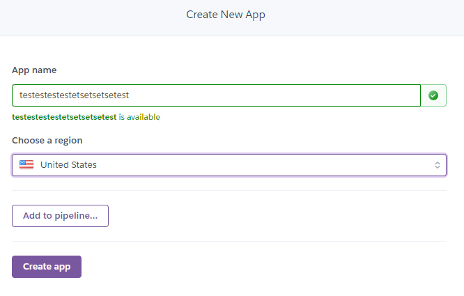
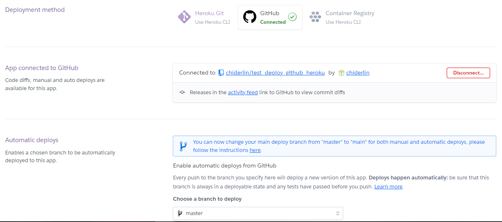
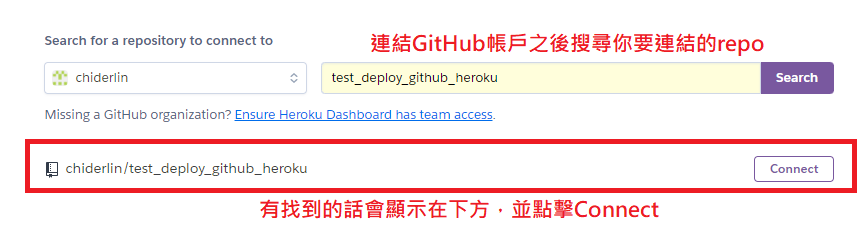
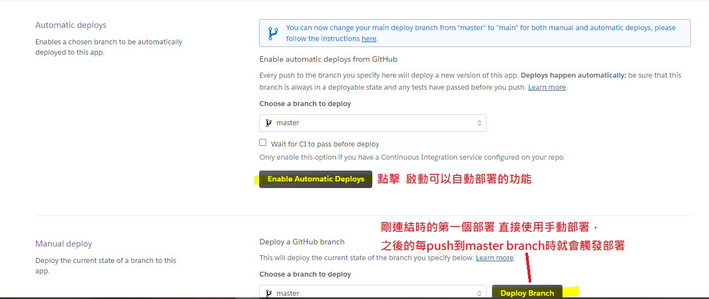
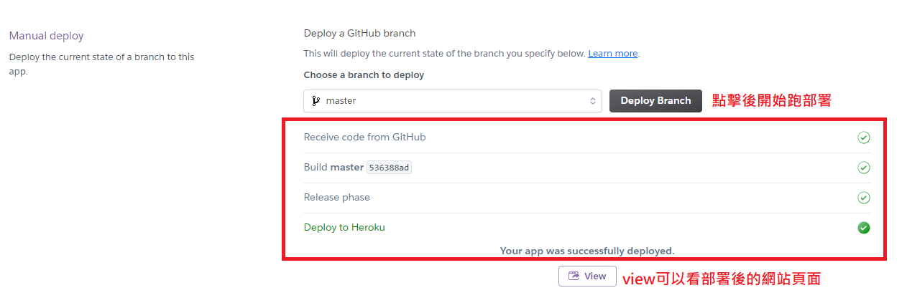
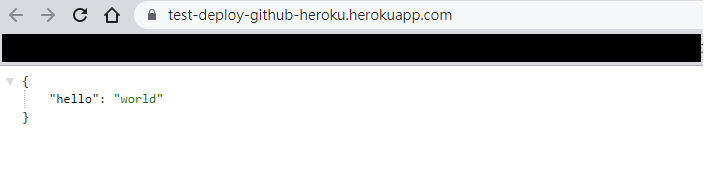
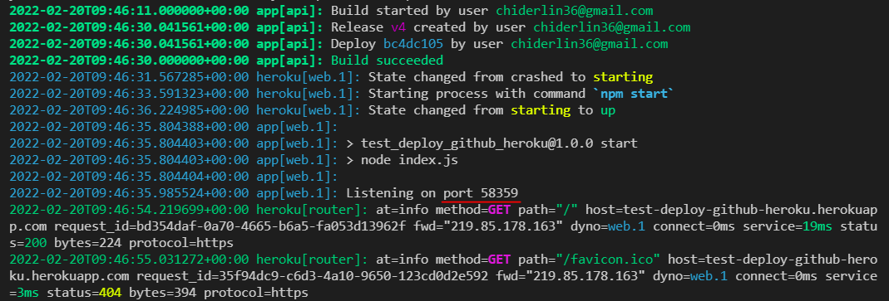

前言:
很久之前碰一點Heroku為了免費部署網站，當時是使用他們自己的heroku git直接部署上去(好像也比較多這個方式的教學)，到最近又碰Heroku，發現想要把專案同時放github跟heroku這樣連線就會出了問題，git好像可以用兩個remote的專案，但又發現可以用github直接觸發heroku部署就想直接採用這個做法，方便且避免git要兩邊管理的問題。
正文開始前:
- 先申請好Heroku帳號
- 先申請好github帳號
- 可以下載heroku CLI => 部署上有錯誤訊息可以看
正文
1. 準備好要部署的程式碼
port設定預設的process.env.PORT
這裡的port一定要寫 process.env.PORT，
因為部署到heroku的時候，在執行上heroku有自己的port要開通，用process.env.PORT 程式才會抓到heroku系統使用的port。
1 | const express = require('express') |
2. 在專案新增一個Procfile檔案給heroku讀取
Procfile檔案裏面，heroku讀取到此指示這個才會啟動程式
1 | web: npm start |
3. 把專案先放到github上
4. 在heroku新增app專案

成功之後會自動到另一個頁面
5. 在heroku連結github帳號 + github專案
Deploy選項的下方選取Connect to GitHub




完成! 之後只要push到github，heroku就會自動部署上去了

補充: 部署沒成功，想debug看錯誤訊息時
上面有說到可以下載heroku CLI，他就是heroku的指令，可以在本機端執行。剛開始使用的話要先heroku login，登入之後當我想看該專案的log資訊時，使用heroku logs --tail --app HEROKU專案名稱，
我這邊是test-deploy-github-heroku所以是heroku logs --tail --app test-deploy-github-heroku，在你的command line就會有即時更新的log資訊，所以在你重新部署時也可以同時開啟這個log查看部署進度跟狀況。

心得
現在文章整理起來整體步驟不會太多太複雜，但一開始一直沒有部署成功，後來才真正找到程式碼port的這個坑，感受到自己對nodejs還有很多地方需要了解。
Heroku還有資料庫跟pipline也想找時間再碰一下囉，許願他們文件可以整理有順序一些~
資料來源:
Python Flask 網站開發 - Heroku 雲端主機教學 By 彭彭 - 以前看的入門影片(彭彭~一定要的)
How to Deploy Node App to Heroku from GitHub - FREE in 2021
process.env